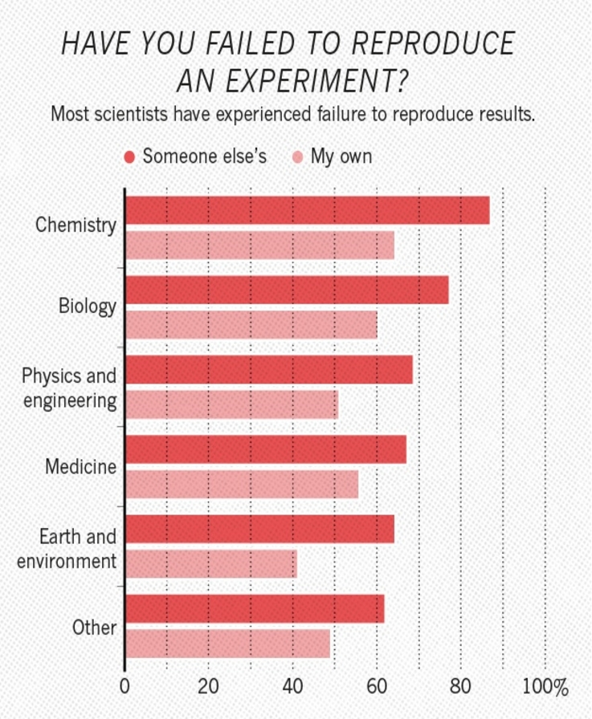

Tools for Reproducible Research
Alex Coleman
Research Computing
2020-12-10
Got a question?
Please pop questions in the chat as you think of them. I’ll either take them at the end or if I find a good moment to respond.
Who are Research Computing?
The Research Computing Team are a collection of research software engineers and data analysts spread across LIDA and central IT including:
- Mark Conmy
- Martin Callaghan
- John Hodrien
- Ollie Clark
- Adam Keeley
- Sean Tuck
- Phil Chambers
- Alex Coleman
- Samantha Crossfield
Motivations

What’s all the fuss about?


Agenda
Today we’re going to touch on ways to make our code reproducible.
We’ll touch on:
- Basics - version control and project management
- Conda - to record environments and manage packages
- Virtual Machines - using vagrant to script virtual machine configuration
- Containers - a small, portable approach to sharing environments
- Workflow tools - AKA Snakemake
- Notebooks - The computational scientists lab book
Basic building blocks
The basic building blocks of a good, reproducible project are:
- version control i.e. git
- Simple project management structure
Version control
Version control or source control systems are means by which we can track changes in our code.
- It keeps a clear and accountable linear timeline of changes
- Very useful when coding in a team
- Prevents folders filling up with
draft1.txt draft1.2.txt draft.1.2.3.txt - We encourage people to use
git
Project management
Keeping all files relating to a project in a single folder is a good starting point.
project_name/
├── README.md # overview of the project
├── data/ # data files used in the project
│ ├── README.md # describes where data came from
│ └── sub-folder/ # may contain subdirectories
├── processed_data/ # intermediate files from the analysis
├── manuscript/ # manuscript describing the results
├── results/ # results of the analysis (data, tables, figures)
├── src/ # contains all code in the project
│ ├── LICENSE # license for your code
│ ├── requirements.txt # software requirements and dependencies
│ └── ...
└── doc/ # documentation for your project
├── index.rst
└── ...